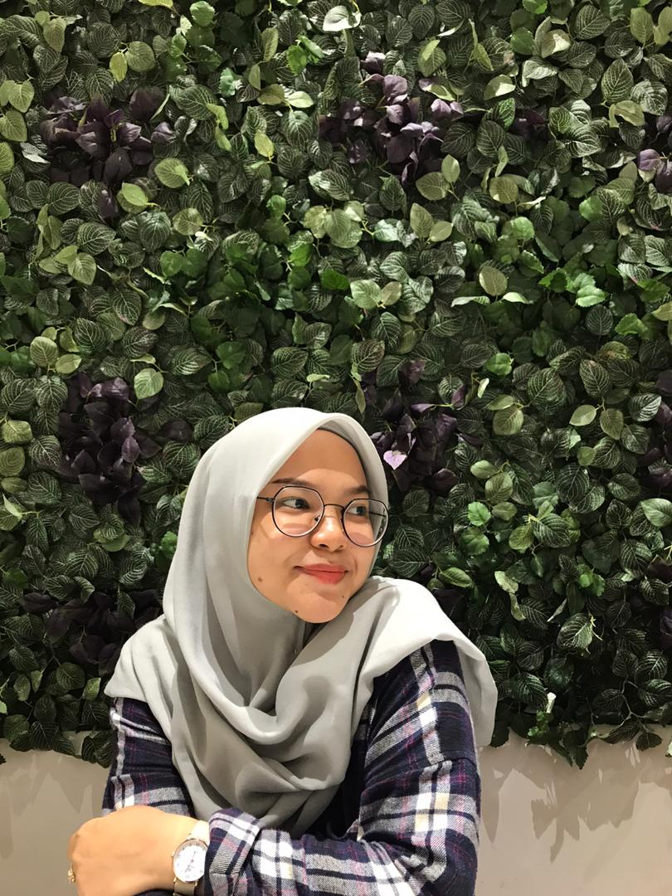
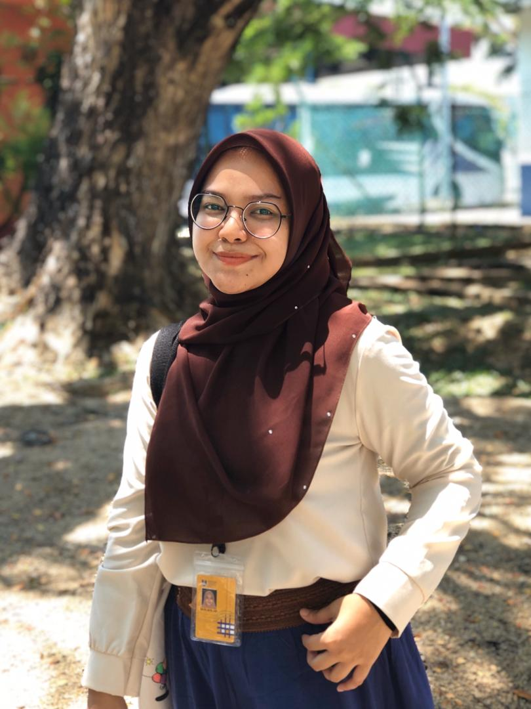
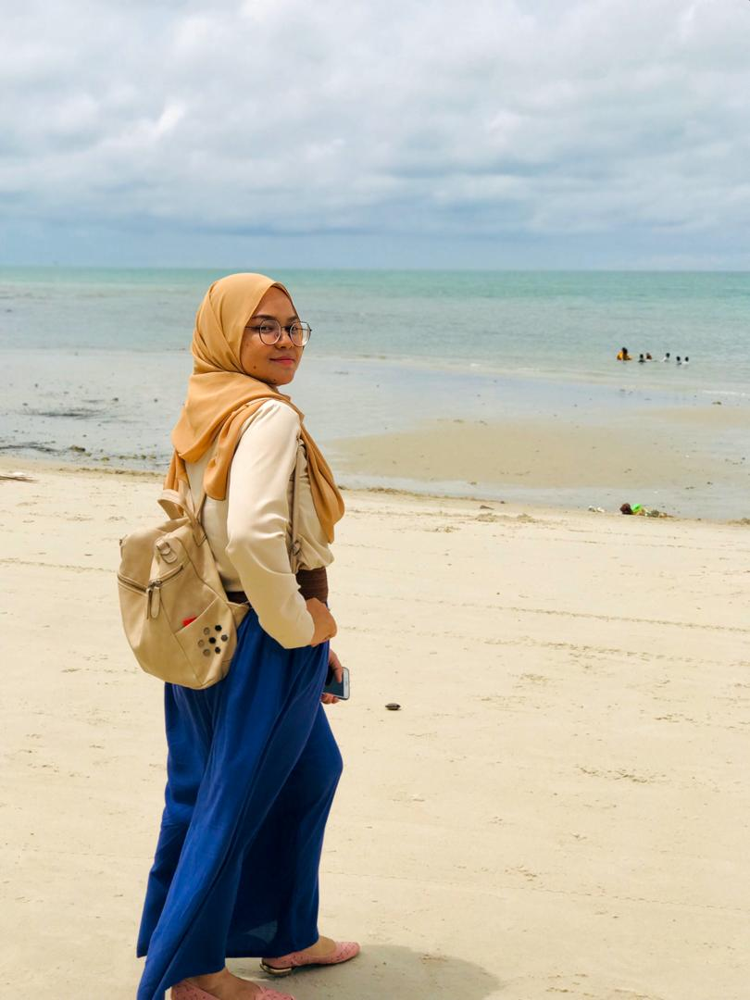
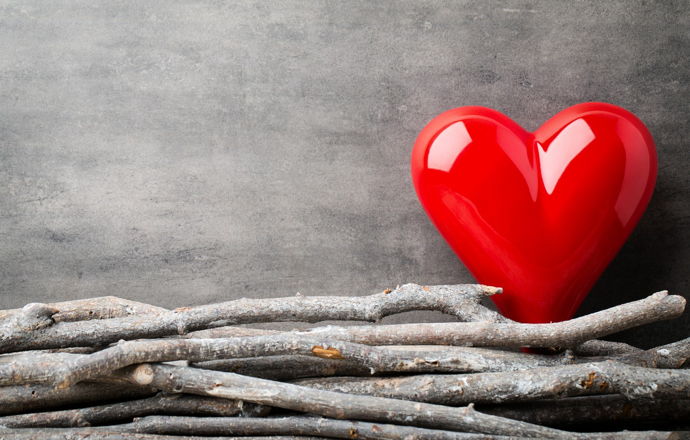
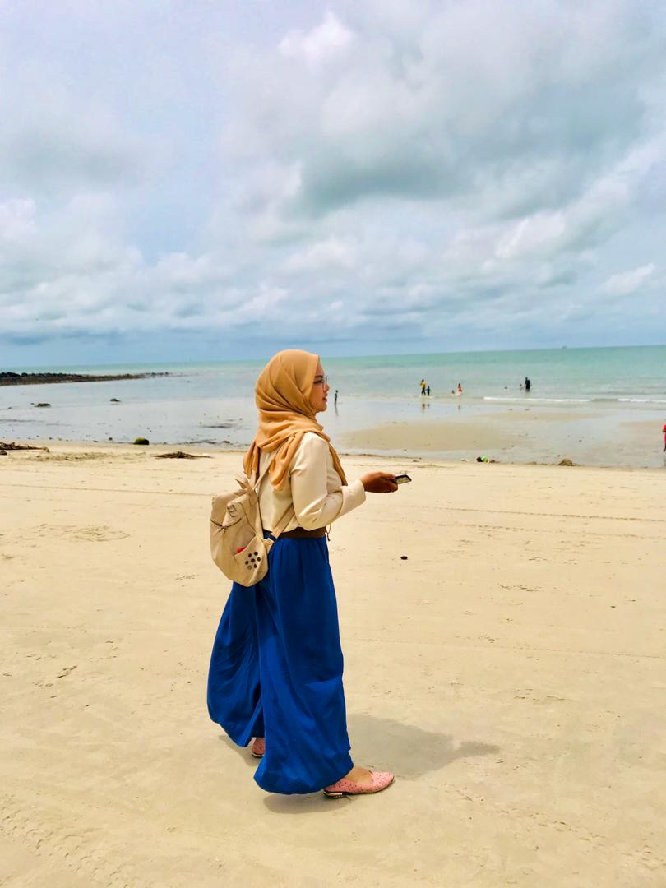

Thank you for coming by into my website. Hope you enjoyed reading about my life! :D



Hi everyone.. My name is Nur Adilah Binti Othman. Im a 21st year old. I'm Computer Science student at UiTM Kuala Terengganu. I'm struggling my degree, now i'm at my second year. My ID number is 2018458734. i'm from CS2304B1 group class.
I stay at Pasir Mas, Kelantan. It is my born place and i love my village. I am the youngest from five siblings. Let's talk about my passion. To be honest, i'm good at eating. I guess, you are likely to agree with my first passion, right? Nowadays, we can get anything that we want in a blink of eye. So, i choose to make my life as easy as ABC too. I always do online shopping whenever i'm bored. Yea, of course i need money too for that. I'll stop doing that if i'm out of money. Hehe.. I can be a social person when it comes to spend time with my friends. So, my next hobby is going out with my friends, wherever it is, as long as i'm with my friend, i'm a happy pie. Lastly, i also used to watch dramas during my leisure time. But, out of all of my hobbies i have mentioned earlier, i did this one the least. Because i can fall asleep very fast. Somehow, i enjoyed doing that.
In life, i really in love the most when i get appreciated by people, especially people that i love such as my family. Who doesn't like being appreciated, right? I know i'm not the only one. By opposite, thing that i hate the most is seeing people not getting their justice. I really cannot tolerate this kind of situation for happening to anybody, also to myself. It really hurts me, and the one who feels it, of course. For my ambition in my life, honestly speaking, i do not have any fix ambition. I hope i will find any jobs that fits me soon. I'm not sure if i can have a job related to programming or not because rate i like programming is 7.8 out of 10. I hope i can find fun studying them, soon.

“Not how long, but how well you have lived is the main thing.”
